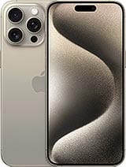

苹果 iPhone 15 Pro Max

苹果 2023 年顶级旗舰，首款 3nm 芯片 A17 Pro 加钛金属机身，换装 USB-C 与 5 倍四重反射棱镜长焦，是影像、性能、生态最完整的 iPhone。
客观评测
iPhone 15 Pro Max 于 2023 年 9 月发布，搭载首款 3nm 芯片 A17 Pro，配备 6.7 英寸 2796×1290 分辨率 ProMotion OLED 屏。后置 4800 万像素主摄（f/1.78，第二代传感器位移式 OIS）、1200 万像素超广角与 1200 万像素 5 倍四重反射棱镜潜望长焦（f/2.8，120mm）。接口首次改为 USB-C（USB 3.0），机身采用钛金属中框，重约 221 克，支持 IP68，内置约 4441mAh 电池。
主观点评
15 Pro Max 是近几年最让我愿意多拍的 iPhone。钛金属边框让 6.7 英寸的机身轻了一截，5 倍长焦拍人像、拍远景终于有了压缩感。4800 万像素主摄直出 2400 万照片，细节与体积平衡得漂亮。视频依旧是行业天花板，随手拍就能剪。要说抱怨，还是那个老问题：充电慢、信号一般、价格贵。但生态与保值摆在那里，它依然是标杆。
优点与不足
- A17 Pro 性能与能效领先，支持光线追踪游戏
- 钛金属机身减重又坚固，5 倍潜望长焦补齐远摄短板
- 视频录制能力行业标杆，Log 与 ProRes 适合创作
- 起售价近万元，高容量版本破万
- 有线充电功率保守，完整充满较慢
- iOS 依然不支持通话录音等本地化功能
参数规格
| 屏幕尺寸 | 6.7 英寸 Super Retina XDR OLED |
|---|---|
| 屏幕材质与分辨率 | OLED（LTPO），2796×1290 |
| 刷新率 | ProMotion 1–120Hz 自适应刷新率 |
| 峰值亮度 | 约 2000nit（户外峰值） |
| 处理器 | 苹果 A17 Pro（3nm），6 核 CPU + 6 核 GPU |
| 内存 | 8GB |
| 存储 | 256/512GB/1TB |
| 电池 | 约 4441mAh（典型值） |
| 有线充电 | 约 20–27W（USB-C 快充，30 分钟约充至 50%） |
| 无线充电 | 15W MagSafe，7.5W Qi 无线充电 |
| 后置主摄 | 4800 万像素（1/1.28 英寸传感器），f/1.78，24mm，第二代传感器位移式 OIS |
| 后置超广角 | 1200 万像素，f/2.2，13mm，约 120° 视场角 |
| 后置潜望长焦 | 1200 万像素，f/2.8，120mm，5 倍光学变焦，3D 传感器位移式 OIS（四重反射棱镜） |
| 前置 | 1200 万像素 TrueDepth，f/1.9，支持自动对焦 |
| 视频能力 | 最高 4K@60fps Dolby Vision、ProRes、Log 视频、电影效果模式、运动模式 |
| 尺寸 | 约 159.9×76.7×8.25 毫米 |